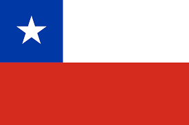

<!--
  Generated template for the ChilePage page.

  See http://ionicframework.com/docs/components/#navigation for more info on
  Ionic pages and navigation.
-->
<ion-header>

  <ion-navbar>
    <ion-title>Chile</ion-title>
  </ion-navbar>

</ion-header>


<ion-content padding>
    <br>
    <span>Nome: Chile</span><br>
    <span>Capital: Santiago</span><br>
    <span>Região: Oeste</span><br>
</ion-content>
